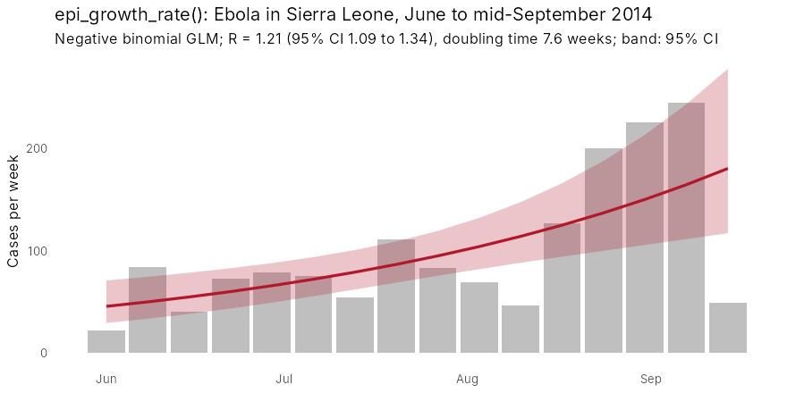
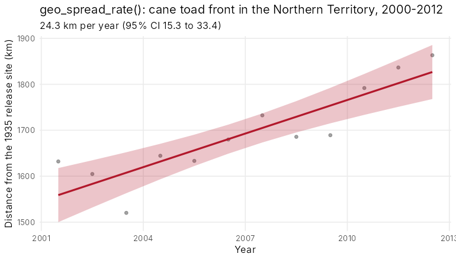
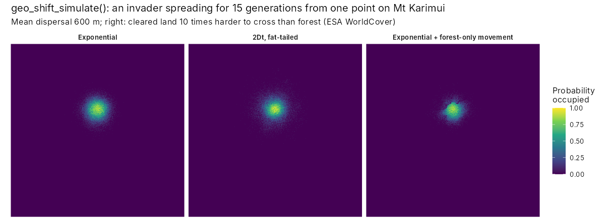
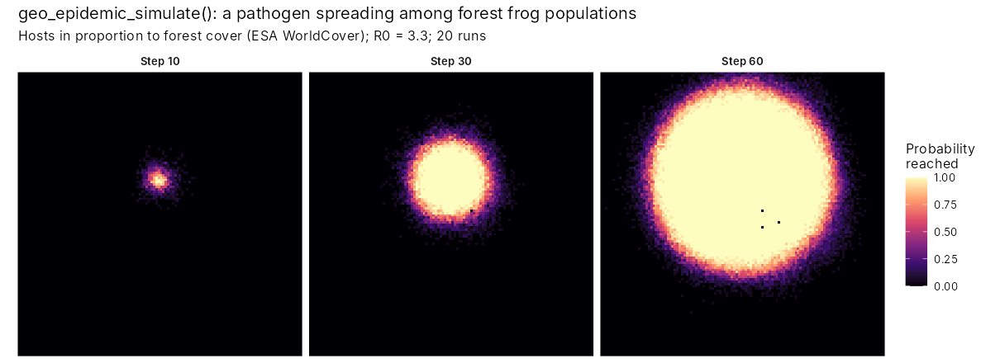

12. Invasions and epidemics
guide-12-invasions-epidemics.RmdInvasive species, emerging diseases and human encroachment share one question: how fast is something spreading, and where will it go next? tidymapr answers it in three ways:
- from case counts, the growth rate of an epidemic;
- from dated records, the speed of an invasion front;
- from maps, a simulation of spread across a real landscape.
This chapter uses real data throughout:
- the 2014 Ebola epidemic in Sierra Leone;
- GBIF records of the cane toad in Australia;
- the elevation and land cover of Mt Karimui, Papua New Guinea.
The figures were made with the code shown. That code needs an internet connection or downloaded files, so it is not run when this page is built.
| Question | Functions |
|---|---|
| How fast are cases growing, and what is R? | epi_growth_rate() |
| How fast is the range expanding? | geo_spread_rate() |
| How far do individuals move, and how often far? | geo_dispersal_kernel() |
| Where will an invader spread on this landscape? | geo_shift_simulate() |
| Where will an infection spread among host populations? | geo_epidemic_simulate() |
| Which analysis, and what do the results mean? | tidyvisor() |
1. How fast is an epidemic growing?
Early in an outbreak, cases grow exponentially. The slope of log
cases against time is the growth rate r.
epi_growth_rate() fits it with a Poisson or negative
binomial GLM, over a window that you choose to cover the exponential
phase.
With the mean and standard deviation of the generation interval, r gives the reproduction number R, the number of new cases caused by each case (Wallinga and Lipsitch 2007). The confidence interval of r comes from the model on the link scale. The intervals of the doubling time and of R are transformations of it.
library(tidymapr)
e <- outbreaks::ebola_sierraleone_2014 # line list, one row per case
g <- epi_growth_rate(e,
date = date_of_onset, unit = "week",
window = as.Date(c("2014-06-01", "2014-09-14")),
family = "negbin", # weekly counts are overdispersed
generation_mean = 15.3 / 7, generation_sd = 9.3 / 7 # WHO Ebola Response Team (2014)
)
g$estimates
#> quantity estimate std_error lower upper unit
#> 1 growth_rate 0.0917 0.0253 0.0421 0.141 per week
#> 2 doubling_time 7.56 NA 4.91 16.5 weeks
#> 3 reproduction_number 1.21 NA 1.09 1.34 secondary cases
plot(g)
Cases doubled about every seven and a half weeks, and each case infected about 1.2 others. That is below the initial R0 of about 2 and close to the 1.4 that the WHO Ebola Response Team (2014) estimated for Sierra Leone by September: this window spans the slowing of growth. The fitted band is the 95% interval of the expected count from the model, not of individual weekly counts. Weeks bending below the line at the end of the window are the first sign of control.
tidyvisor(g) puts this into sentences, including the
reduction in transmission needed to stop growth (1 - 1/R, about
17% here).
2. How fast is an invasion spreading?
geo_spread_rate() regresses distance from the point of
introduction on time. It has three ways of measuring distance:
-
"first_record": the distance of the first record in each grid cell. It works with sparse data, but it lags behind the true front where recording is poor. -
"front": a high quantile of distance in each year. It needs at least five records a year, and it discounts isolated records far ahead of the front. -
"area": the radius of a circle with the occupied area. It assumes spread in all directions, and it underestimates when sampling is sparse.
The cane toad was released near Gordonvale, Queensland, in 1935. Here are its GBIF records in the Northern Territory, 2000 to 2012:
toads <- read.csv("toad_nt.csv") # GBIF occurrences: year, lon, lat
s <- geo_spread_rate(toads,
date = year, origin = c(145.78, -17.10),
method = "front", period = c(2000, 2012)
)
s
#> Spread rate (front): 24.3 km per year (95% CI 15.3 to 33.4), R2 = 0.78, n = 12.
plot(s)
The front moved about 24 km a year. That is slower than the 50 km or
more a year measured directly at the front in the tropics (Phillips et
al. 2006). The gap is real and instructive: opportunistic records lag
the front, and recording effort changed over these years. Rates from
occurrence data are best read as lower bounds and compared with records
per year (tidyvisor(s) reminds you).
3. How far do individuals move?
A dispersal kernel gives the probability of moving each distance. Two kernels are offered:
- The exponential kernel has a thin tail. Spread is a steady travelling wave.
- The 2Dt kernel (Clark et al. 1999) has a fat tail. Rare long jumps make spread accelerate and seed patches far ahead of the front.
Both are set by their true mean distance, and both are normalised on
the grid, so results do not depend on cell size.
geo_dispersal_kernel() shows what a kernel looks like on
your grid:
geo_dispersal_kernel(dispersal_mean = 600, cell_size = 180)
#> exponential: realised mean 627 m, max distance 3000 m
geo_dispersal_kernel(600, 180, kernel = "2Dt", kernel_shape = 1)
#> 2Dt: realised mean 593 m, max distance 6000 m4. Where will an invader spread on this landscape?
geo_shift_simulate() runs a stochastic model of
colonisation and extinction on a grid. Besides the kernel, three things
shape spread:
-
resistance: barriers and corridors, such as cleared land that is hard to cross. -
jump_rateandjump_weights: human-assisted jumps along roads or rivers. -
disturbance: clearing, fire or eradication.
Here an invader starts from one point on Mt Karimui (SRTM elevation, coarsened to about 60 m) and spreads for 15 generations. The right panel uses ESA WorldCover, with cleared land ten times harder to cross than forest.
library(terra)
dem <- aggregate(rast("dem.tif"), 2)
lc <- geo_landcover(c(144.6, -6.7, 145.0, -6.3), template = dem)
forest <- resample(ifel(lc == 10, 1, 0), dem, "average")
suit <- ifel(dem > 0, 0.9, NA)
start <- init(dem, 0)
start[cellFromXY(dem, cbind(144.80, -6.45))] <- 1
run <- function(...) {
geo_shift_simulate(suit, start,
dispersal_mean = 600, steps_per_layer = 15,
nsim = 30, seed = 1, persistence = 0, ...
)
}
exp_k <- run()
fat_k <- run(kernel = "2Dt", kernel_shape = 1)
forest_only <- run(resistance = 1 + 9 * (1 - forest))
The panels show the share of 30 runs in which each cell is occupied:
- Exponential kernel: a compact, nearly circular spread.
- Fat-tailed kernel: the same mean distance, but scattered outposts far from the start. These outposts are where control is hardest and surveillance matters most.
- Exponential kernel with resistance: spread follows the forest and stalls at cleared land.
5. Where will an infection spread among host populations?
geo_epidemic_simulate() couples a chain-binomial SIR
model in each cell (susceptible, infected, recovered) with the same
kernels and resistance between cells.
Its parameters:
-
beta: transmission. -
gamma: recovery. -
omega: loss of immunity. -
coupling: how much infection pressure crosses cells.
Within a cell, R0 = beta / (1 - exp(-gamma)). The simulated final size of a single-cell epidemic matches the classic final-size equation, which the package tests check.
Here a pathogen spreads among frog populations of the forest on Mt Karimui, with hosts in proportion to forest cover. The grid is coarsened to about 360 m: with contacts up to 5 km away, a finer grid multiplies the neighbours of every cell and the run time.
dem360 <- aggregate(rast("dem.tif"), 12)
forest <- resample(ifel(geo_landcover(c(144.6, -6.7, 145.0, -6.3), template = dem360) == 10, 1, 0),
dem360, "average"
)
hosts <- round(forest * 200)
i0 <- init(dem360, 0)
i0[cellFromXY(dem360, cbind(144.80, -6.45))] <- 20
ep <- geo_epidemic_simulate(hosts, i0,
beta = 0.6, gamma = 0.2, coupling = 0.2, dispersal_mean = 1000,
times = c(10, 30, 60), nsim = 20, seed = 1, threads = 4,
resistance = 1 + 9 * (1 - forest)
)
ep
#> Spatial SIR epidemic: R0 = 3.31, 20 simulations, exponential contacts (mean 1000 m).
#> Share of hosts ever infected: median 0.198 (range 0.173 to 0.224).
tidyvisor(ep)
The maps show the share of runs in which the infection has reached each cell by each step: a map of the risk of arrival, which is what surveillance needs. The forest of Mt Karimui is almost unbroken, so resistance has little to act on and the infection spreads as a regular front, about 10 km across after 60 steps. Only the few cleared cells (the black dots) are never reached. With R0 = 3.3 in each cell, a fifth of all hosts in the landscape had been infected by step 60. The front was still advancing. In a fragmented landscape the same model shows the front breaking up, and gaps in the forest acting as fire breaks.
6. Let the tidyvisor advise and explain
tidyvisor() reads your records and question and
recommends the analysis, checks and plots. It then explains each result
in plain sentences:
References
Clark, J. S., Silman, M., Kern, R., Macklin, E. and HilleRisLambers, J. (1999). Seed dispersal near and far: patterns across temperate and tropical forests. Ecology, 80, 1475-1494.
Phillips, B. L., Brown, G. P., Webb, J. K. and Shine, R. (2006). Invasion and the evolution of speed in toads. Nature, 439, 803.
Wallinga, J. and Lipsitch, M. (2007). How generation intervals shape the relationship between growth rates and reproductive numbers. Proceedings of the Royal Society B, 274, 599-604.
WHO Ebola Response Team (2014). Ebola virus disease in West Africa: the first 9 months of the epidemic and forward projections. New England Journal of Medicine, 371, 1481-1495.